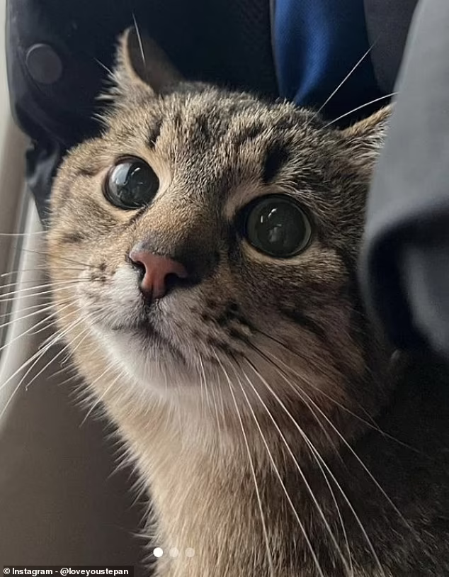

Кіт Степан

Степан - це чудовий кіт, який завжди радує своїх господарів своєю присутністю. Він вміє багато різних речей:
- Вміння грати з м'ячем 🏀
- Навички полювання на мишей 🐭
- Любов до гладіння і ласки 💖
- Вміння вигадувати різні фокуси 🎩
Степан у Wikipedia